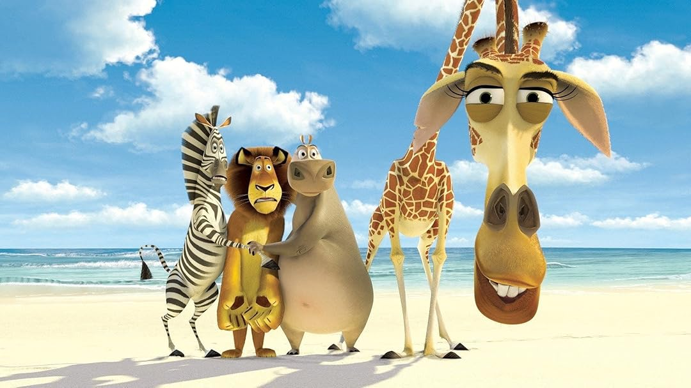

Madagascar
Sinopse
O leão Alex é a grande atração do zoológico do Central Park, em Nova York. Ele e seus
melhores amigos, a zebra Marty, a girafa Melman e a hipopótamo Gloria, sempre passaram a vida em
cativeiro e desconhecem o que é morar na selva. Curioso em saber o que há por trás dos muros do zoo,
Marty decide fugir e explorar o mundo. Ao perceberem, Alex, Gloria e Melman decidem partir à sua procura.
O trio encontra Marty na estação Grand Central do metrô, mas antes que consigam voltar para casa são atingidos
por dardos tranquilizantes e capturados.
Embarcados em um navio rumo à África, eles acabam na ilha de Madagascar, onde precisam encontrar meios
de sobrevivência em uma selva verdadeira.
